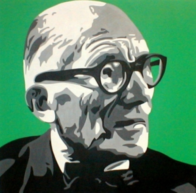

|  |
|
Charles-Édouard Jeanneret-Gris, who chose to be known as Le Corbusier (October 6, 1887 – August 27, 1965), was a Swiss-born architect, designer, urbanist, writer and also painter, who is famous for his contributions to what now is called Modern architecture. In his 30s he became a French citizen.
He was a pioneer in studies of modern high design and was dedicated to providing better living conditions for the residents of crowded cities. His career spanned 8 decades, with his buildings constructed throughout central Europe, India, Russia, and one each in North and South America. He was also an urban planner, painter, sculptor, writer, and modern furniture designer. Already well-known during his lifetime, Wright was recognized in 1991 by the American Institute of Architects as "the greatest American architect of all time".